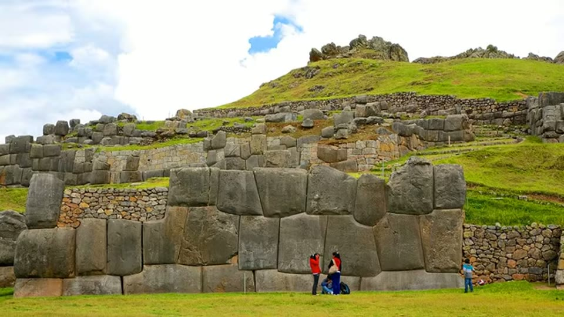
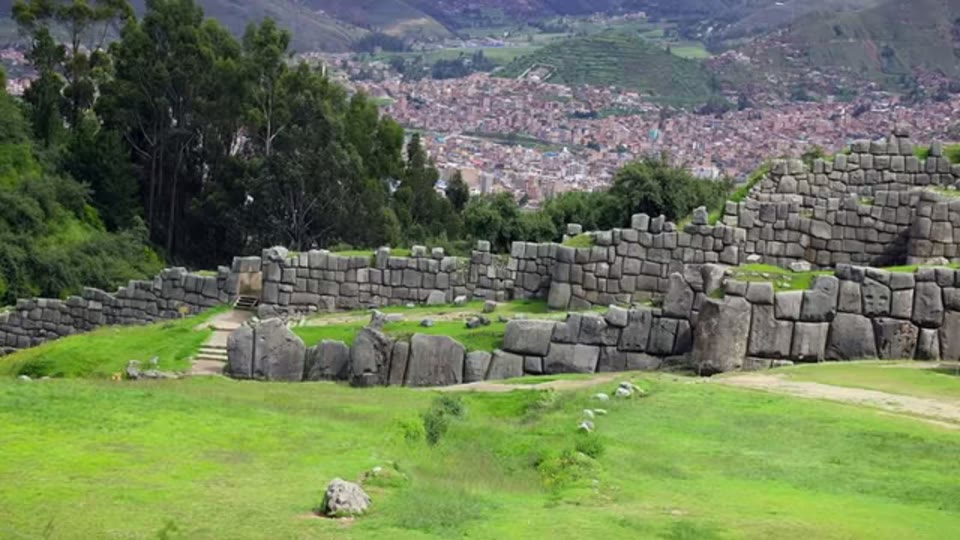
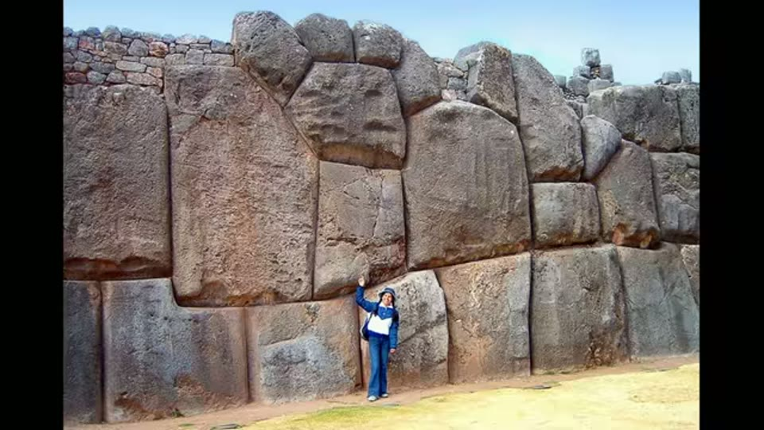
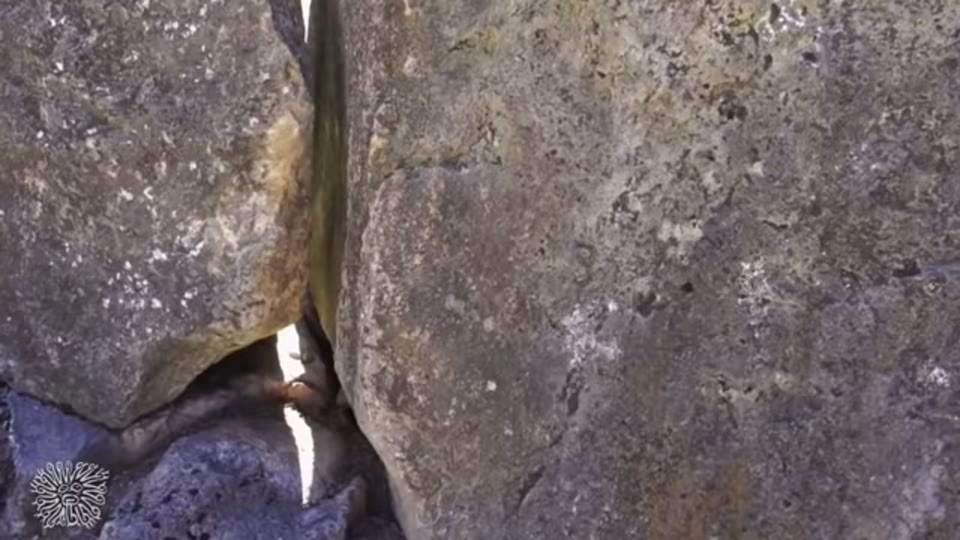
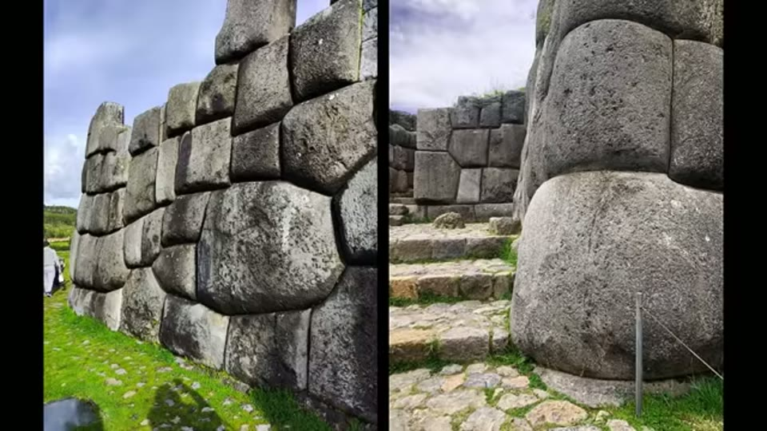
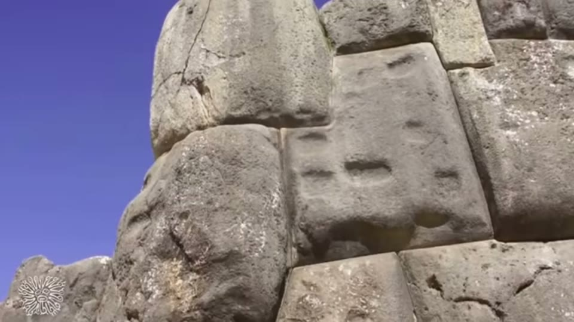
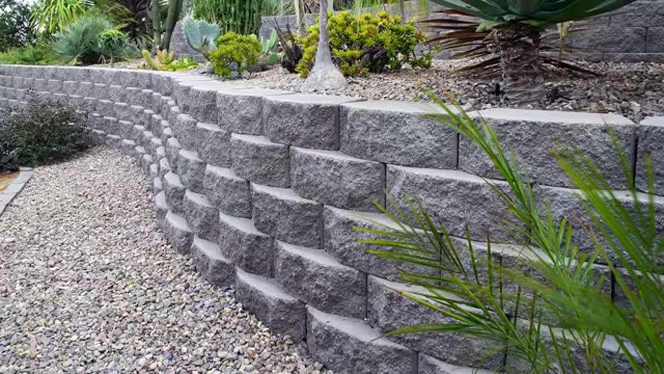

Curious Being
How Were Sacsayhuamán Polygonal Walls Built? Unlocking Ancient Secrets
Tina · 18 min · watch on YouTube · summarised 2026-08-22
This is the video her megalithic knobs video is a chapter of. There, knobs were sorted into four kinds and only one was anomalous. Here the whole wall is the subject, and the hypothesis is stated in full: the blocks were cast in place from a material with a plastic state, not quarried and carved.
She is explicit about its status 16:56–17:13: "I know my hypothesis is far from mainstream, but I want to put it out there for criticism, critique and consideration."
The site, and what is agreed
Sacsayhuamán stands on a steep hill above Cusco. The megalithic zigzag walls are retaining walls holding soil laterally; the largest stones weigh up to 200 tons and stand up to 8.5 m 00:32–01:02. They interlock without mortar, closely enough that she repeats the standard line about a sheet of paper.


Retaining terraces of blocks up to 200 tons and 8.5 m tall, fitted without mortar. Whatever explanation is offered has to account for the size as well as the fit.
Two things she takes as common ground 01:18–02:08:
- The Inca said the walls predated them. The visibly Inca work is the small rubble courses sitting on top of the megaliths — which is the
out-of-sequenceargument stated in one line, and visible in a single photograph. - The upper complex was dismantled after the Spanish conquest and its blocks reused. The three megalithic terraces survive because they were too large to move.

Two qualities of building, in stratigraphic order: the fine megalithic work at the bottom, the crude work on top of it. She takes the upper courses as the Inca work.
On dating she is careful in a way worth noting: the mainstream figure is around 1100 AD for the early sections, and her objection is not a counter-date but an absence — there is no direct evidence of who built the megalithic walls, when, or how, so the 900-year figure is inference. She does not replace it with a number of her own beyond "maybe tens of thousands of years ago", offered as a question.
The explanation she is arguing against
Stated fairly 02:27–02:45: the "guess and check" method — chip a block with hand tools, lower it into place to test the fit, lift it out, chip again, repeat.
Her objections 02:45–03:24 are about labour and lifting rather than about mystery: the precision, the scale, the work of shaping and repeatedly re-hoisting a 100-ton block into an irregular form, and the absence of a crane.
The characteristics an explanation has to account for
This is the same methodological move that makes the knobs video good — list the features first, then require one cause to explain all of them 03:37–05:07:
| feature | why it needs explaining |
|---|---|
| giant, precisely fitted, irregular blocks | any explanation must cover all three at once |
| faces bulging and evenly rounded | pure extra labour on an already impossible workload |
| displaced blocks show joint surfaces matched in 3D and not flat | a fitted joint you cannot cut by eye and check |
| face side finished, back side rough | it meets rubble and soil fill, like a modern retaining wall |
| seams that look straight but are slightly curved | not laid out to a line |
| rectangular stamp-like indents | not a by-product of chiselling |
| knobs | see the knobs entry |
| corner blocks that "look bendable" | shapes that read as bent rather than cut |

The load-bearing observation: earthquakes have opened some joints, and the mating surfaces are three-dimensionally matched and not flat. That is not a fit you can cut by eye and test by lowering a 100-ton block into place.

The faces are not merely irregular, they are evenly rounded and swollen - which on a carving explanation is pure additional labour with no purpose.
She raises the local legend of a plant liquid that softens stone and dismisses it 05:19–05:29: she has found no proof of any such thing. That refusal matters — the legend would have been the easier story to tell.
The construction scenario
05:59–08:44 A civilisation with a cement or concrete having a plastic state before curing. Build like a modern dry-stack wall, except that instead of choosing a rock from a pile that happens to fit, you pour one that fits exactly.
1. Prepare the site, lay the base course, work upward block by block. 2. Largest blocks and corner stones cast in molds in the position they were to occupy. 3. Smaller blocks cast, then placed while still firm but pliable — holding their shape, with some give. 4. Compress from above and push from the sides to close every gap. Her analogy, as in the knobs video: squeezing balls of play-dough together. 5. Finish by scraping around the seams.
The zigzag joint lines follow from setting blocks onto lower blocks that were still plastic. She points to a photograph where a larger upper block has visibly warped the blocks beneath it under its own weight 07:54–08:14. Blocks that had cured longer were harder, ones cured less were softer, so the same process produced different shapes.
The material argument
08:44–10:57 Modern concrete shrinks as it cures — which is wrong for this wall. But non-shrink and expanding concretes exist, and fast-setting products like Quikrete go off within an hour. Her proposal is a quick-setting expanding mix, and it does real work:
- only the exposed face has room to expand; the other sides are constrained by neighbouring blocks, soil and rubble. That is why the faces bulge and the backs do not.
- at gateways, a frame could have prevented bulging into the opening — which is why those surfaces are flatter.
- stamp marks: a tool used to push up blocks that drooped, or the remnants of a lifting device.
- knobs: a suction device removing surplus material, which is why most knobs sit low on the blocks, where gravity would pool the excess.
She then limits her own claim 10:44–10:57: she cannot say all the knobs came from this, only that some could have.

Rectangular sunken marks that look pressed in rather than chiselled out - one of the features she says a carving explanation has no account of.
The Russian analysis
11:02–12:01 The one point where the argument rests on a laboratory result. In 2012 Peru's Ministry of Culture invited a group of Russian geophysicists to study Sacsayhuamán. Seven specimens of wall block were analysed by optical microscopy, microanalysis and X-ray fluorescence. She quotes their preliminary report and links it below the video:
"Regarding the blocks' material, we can confidently say that the process which formed them is impossible in nature."
Their reading, as she gives it, is that the walls were built from restructured limestone powder from a nearby quarry, "which became plastic, due to an unknown technology used by the ancient builders". She reports their own caveat too: they said further study by geologists is needed.
Nothing from the report is put on screen. The whole passage runs over site photography while she reads the quotation aloud; the document itself is only linked below the video. For the piece of evidence the entry rates highest, that is worth knowing.
Why the blocks are not uniform
12:38–15:45 The best-argued passage in the video, and the one that needs no lost civilisation at all.
If you were casting blocks, why not use one mold and make them all the same? Her answer is first practical — the same mold filled to different levels gives different blocks, adjustable forms exist, and a plastic material reshapes as it settles — and then structural:
- a dry-stack wall has no mortar, so it holds by gravity and interlock; each block must be laid so its weight ties back into the wall
- dry-stack walls are self-draining and tolerate frost, subsidence, heave and thermal movement
- flexibility beats rigidity in a seismic region
- we use uniform blocks today because we have mortar and metal ties to bind them; without those, uniform blocks give you a much weaker wall than interlocking polygonal ones
- modern interlocking precast dry-stack blocks exist, and are still limited to low retaining walls. Sacsayhuamán is not low.

The modern equivalent, and its limit: interlocking precast dry-stack blocks are real and are still used only for low retaining walls. Sacsayhuamán is not low.
Her closing material point 15:45–16:16: modern concrete cracks unless well made, which is why we design in control and expansion joints. Most blocks at Sacsayhuamán have not cracked.
And a scope limit that is easy to miss and worth crediting 16:17–16:46: asked whether all the polygonal walls of Peru are man-made stone, she answers "I don't know but I doubt it", and calls for material analysis at Machu Picchu, Ollantaytambo, Puma Punku and Tiwanaku rather than extending the claim to them.
See also
Megalithic Knobs Worldwide — the same hypothesis narrowed to a single feature and tested against every ordinary explanation of it, including the ones that win.
What you can check yourself
- The Russian report. The most checkable thing here by a distance: a named institution, a date, a sample count, three named techniques, a quotable sentence and a link. Whether it exists, what it actually says, and whether it was ever followed up are all findable.
- Displaced blocks. Earthquakes have shaken blocks out of position, so the mating surfaces can be photographed. Whether those surfaces are flat or three-dimensionally matched is a question with an answer.
- The warped-block photograph is a specific frame making a specific claim about one wall.
- Front-finished, back-rough construction is visible wherever a wall is broken.
- Bulge only on the exposed face is a prediction, and a strong one: on a casting-and-expansion reading, no constrained face should bulge. Any bulging back face would count against it.
- Modern dry-stack engineering limits — that interlocking precast is confined to low walls — is a checkable fact about current practice, not about the past.
What the video does not settle
- The report is preliminary and by geophysicists, who said themselves that geologists were needed. She notes this. Fourteen years on, an entry citing it should ask what happened next, and this one has not found out.
- "Impossible in nature" is doing a lot of work. Quoted alone it sounds decisive, but it is one sentence out of a preliminary document, and the rest of it has not been read here.
- No independent replication. Seven specimens, one team, one visit.
- The mechanism is offered, not demonstrated. No one has cast a polygonal wall this way, at any scale, to show it produces these features. That experiment is cheap compared with everything else here.
- Where is the plant? A limestone-powder binder needs a source of material, mixing, and moving very large volumes of it uphill. The video does not ask what the production of a 200-ton pour would have required or left behind.
- Expanding concrete cuts both ways. If the faces bulge because the mix expanded, the same expansion inside a constrained joint should open the wall up. She does not address it.
- The dating is left open, which is honest, but it means the strongest engineering arguments are attached to a builder of unspecified date, which is difficult to test.
What we have not checked
- Transcript "Saqsawaman" throughout; rendered here as Sacsayhuamán. Also corrected: Machu Picchu, Tiwanaku (transcript "Tiahuananco").
- The Russian report has not been located or read. The names of the researchers, the institution, the report's title and its publication status are all unchecked. It is quoted here exactly as she quotes it, and should not be cited further until it is found.
- The 200-ton and 8.5 m figures are hers and are not independently confirmed.